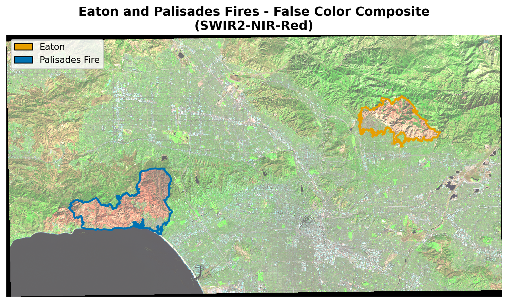
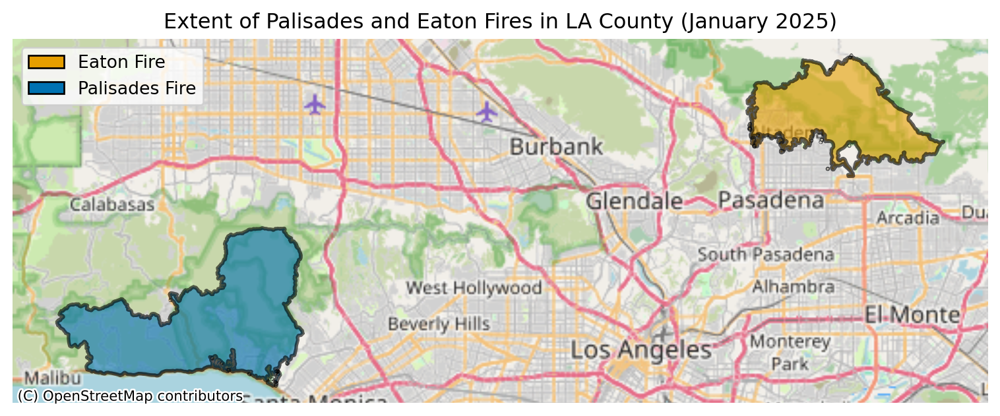
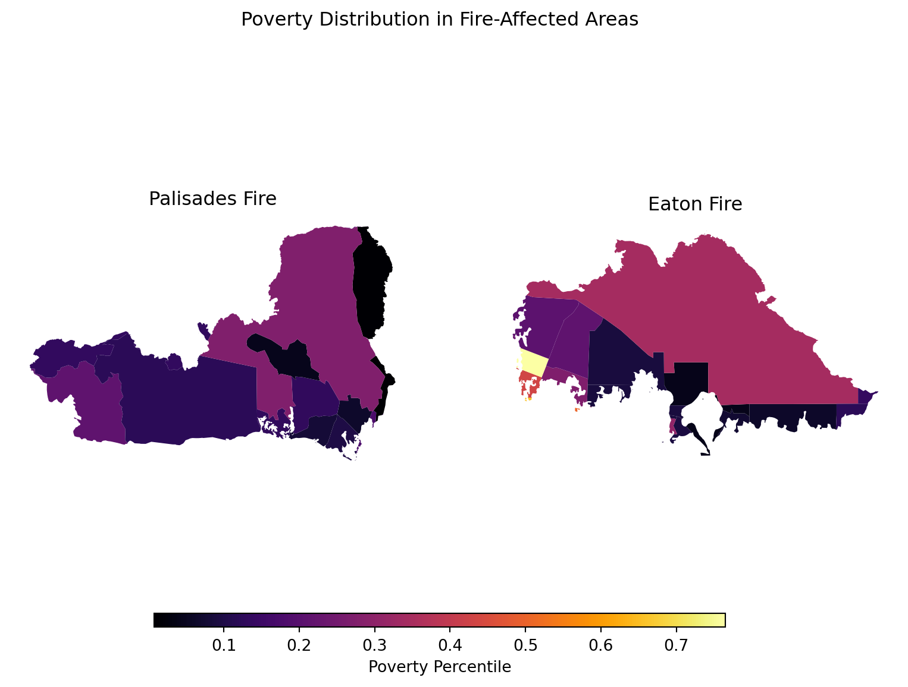

Code
import os
import numpy as np
import matplotlib.pyplot as plt
import matplotlib.patches as mpatches
import geopandas as gpd
import xarray as xr
import rioxarray
import contextily as ctx
Image: Palisades Fire as seen from Downtown Los Angeles (Image captured via PTZ Camera/ VMS system)
The Eaton and Palisades Fires that occurred in early January 2025 devastated thousands of homes, displaced tens of thousands of residents, and caused severe ecological and infrastructural damage. Using a combination of geospatial and tabular datasets, this notebook explores fire scars through false-color imagery derived from remote sensing data. Specifically, it uses Landsat Collection 2 Level-2 atmospherically corrected surface reflectance data collected by the Landsat 8 satellite and provided in NetCDF format, along with fire perimeter vector data in Shapefile format. Additionally, this analysis examines the social dimensions of the Eaton and Palisades Fires using the 2024 Environmental Justice Index (EJI) data for California, provided in geodatabase format.
The analysis centers on four critical technical aspect required for data integration:
Data harmonization through coordinate reference systsem (CRS), which requires reprojecting spatial objects to align all geospatial layers.
Vector-to-raster integration using the fire perimeter shapefile to spatially clip the mutidimensional Landsat NetCDF data.
Mutli-band visulaization, focusing on generating a true-color image (RGB) by selecting and robustly scaling the correct spectral bands from the NetCDF structure.
Geospatial data cleaning, which involves identifying NaN values to ensure data integrity and resolve plotting errors.
Landsat Collection 2 Level-2
Atmospherically corrected surface reflectance data, collected by Landsat 8 satellite. Data retrieved from Microsof Planetary Computer data catalogue and clipped to an area surroundeding the fire perimeters.For visualization and educational purposes.
Dissolved Eaton and Palisades Fire Perimeters
Features layers are publically avilable from LA County REST web ArcGIS Hub. Containing heat perimeters for the Palisades and Eaton Fires.
EJI Data
The 2024 EJI geodatabase data for California is publicaly avialble in Agency for Toxic Substance Disease Registery (ATSDR) and contains environmental, economic, and demographic data at the census track level.
import os
import numpy as np
import matplotlib.pyplot as plt
import matplotlib.patches as mpatches
import geopandas as gpd
import xarray as xr
import rioxarray
import contextily as ctxThe following code loads three key geospatial datasets for analyzing the January 2025 Southern California wildfires
# Load wildfire perimeter data for the Eaton and Palisades fires (January 21, 2025)
eaton = gpd.read_file(
os.path.join("data","eaton_perimeter",
"Eaton_Perimeter_20250121.shp"))
palisades = gpd.read_file(
os.path.join("data","palisades_perimeter",
"Palisades_Perimeter_20250121.shp"))
# Import the NetCDF Landsat data using xr.open_dataset()
fp= os.path.join("data","landsat8-2025-02-23-palisades-eaton.nc" )
landsat8 = xr.open_dataset(fp)
# Import the EJI geodtabase data
cali_eji = gpd.read_file("data/cali_eji.gpkg")Wildfire Perimeter Data: Imports shapefiles containing the mapped boundaries of the Eaton and Palisades fires as of January 21, 2025, using GeoPandas for vector geometry handling.
Satellite Imagery: Loads Landsat 8 multispectral satellite data (NetCDF format) captured on February 23, 2025, covering both fire-affected areas using xarray for efficient multidimensional array processing.
Environmental Justice Index (EJI): Imports California’s 2024 Environmental Justice Index data from a geodatabase, which provides socioeconomic and environmental health vulnerability metrics at the census tract level.
Together, these datasets enable spatial analysis combining fire extent, post-fire satellite observations, and community vulnerability indicators to assess wildfire impacts on different populations.
Note: File paths will need to be updated to match your local directory structure. Also, the original EJI data was provided as a geodatabase (.gdb). It was converted to a GeoPackage (.gpkg) format beforehand to improve loading speed, as geodatabases can be slow to read with GeoPandas.Click here for Github Repository
Before analysis, each dataset was inspected to understand its structure.
Key findings:
The Eaton and Palisades fire perimeter datasets stored as GeoDataFrames containing 20 spatial features, representing mapped fire boundary components. Each dataset includes geometric information along with attributes describing feature type and measurements of area and perimeter length, confirming that both datasets are well-structured for spatial analysis of fire extent. The remote sensing data are provided in NetCDF format and consist of a two-dimensional raster grid with multiple spectral bands including visible, near-infrared, and shortwave infrared. That are commonly used to assess burn severity and vegetation change. Together, these bands enable the creation of false-color composites and other raster-based analyses of post-fire conditions.
In addition, the California Environmental Justice Index dataset contains over 9,000 geographic features and an extensive set of demographic and environmental variables, making it suitable for evaluating how wildfire impacts intersect with social vulnerability. Combined, these datasets provide complementary spatial, spectral, and socioeconomic information necessary to analyze both the physical footprint of the fires and their potential environmental justice implications.
When combining spatial datasets from different sources, aligning coordinate reference systems is essential for accurate spatial analysis. Here, the Landsat 8 NetCDF initially lacked an assigned CRS, which was recovered from its embedded spatial_ref.crs_wkt attribute, revealing the dataset was in EPSG:32611 (UTM Zone 11N). All datasets were then reprojected to match the Palisades fire perimeter’s CRS (EPSG:3857) as the common reference system.Since reprojecting the large Landsat raster is computationally expensive, the reprojected version was saved to disk beforehand as landsat8_reproj.nc and loaded directly here to improve rendering performance.
# Set reference CRS from Palisades fire perimeter
crs_reference = palisades.crs
# Reproject EJI to reference CRS
cali_eji = cali_eji.to_crs(crs_reference)
# Load already-reprojected Landsat data
landsat8 = xr.open_dataset("data/landsat8_reproj.nc")
landsat8 = landsat8.rio.write_crs("EPSG:3857")To visualize fire damage, a false color composite was created using three Landsat 8 spectral bands mapped to RGB channels:
| Band | What it reveals |
|---|---|
| SWIR2 | Burned areas, moisture content |
| NIR | Healthy vegetation (appears bright red) |
| Red | Urban surfaces, bare soil |
This combination makes fire damage immediately visible, burned areas appear dark brown or black, healthy vegetation appears bright red, and urban areas render as gray-green. NaN values in the satellite data were filled with zeros to prevent plotting errors.

To assess which communities were impacted, census tracts from the 2024 EJI dataset were matched to each fire using two approaches. First, a spatial join (gpd.sjoin) identified all census tracts that intersected the fire boundaries, however this includes entire tract boundaries even if only a small portion overlaps, overestimating the affected area. Clipping (gpd.clip) was then used to cut the census tracts precisely to the fire boundary, providing a more accurate representation of the affected area. The EJI variable EPL_POV200, the poverty percentile for households below 200% of the federal poverty line, was used to compare socioeconomic vulnerability across both fire footprints.


This analysis demonstrates how geospatial tools can reveal both the physical and social dimensions of wildfire events. Combining remote sensing with environmental justice data highlights how wildfire impacts are not distributed equally, understanding these patterns is essential for equitable disaster recovery and resource allocation.
Bren School of Environmental Science and Management. (2025). landsat8-2025-02-23-palisades-eaton.nc [Dataset]. Accessed November 20, 2025, from https://drive.google.com/drive/u/1/folders/1USqhiMLyN8GE05B8WJmHabviJGnmAsLP
Centers for Disease Control and Prevention and Agency for Toxic Substances Disease Registry. (2024). 2024 Environmental Justice Index. [Dataset]. Accessed December 2, 2025, from https://atsdr.cdc.gov/place-health/php/eji/eji-data-download.html
County of Los Angeles Enterprise GIS. (2025). Palisades and Eaton Dissolved Fire Perimeters (2025) [Dataset]. County of Los Angeles. Accessed November 20, 2025, from https://egis-lacounty.hub.arcgis.com/maps/ad51845ea5fb4eb483bc2a7c38b2370c/about
Microsoft Planetary Computer. (n.d.). Landsat Collection 2 Level-2. Accessed November 20, 2025, from https://planetarycomputer.microsoft.com/dataset/landsat-c2-l2